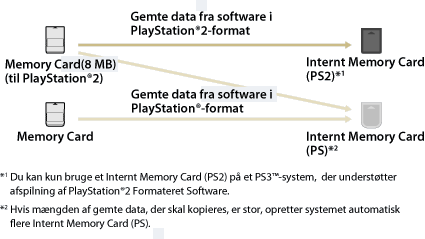

Spil > Afspilning af PlayStation®2-/PlayStation®-formateret software > Brug af gemte data på memory cards
Brug af gemte data på memory cards
Hvis du vil bruge gemte data på et hukommelseskort (8 MB) (til PlayStation®2) eller et hukommelseskort til at spille et spil, skal du kopiere dataene til et internt hukommelseskort på harddisken. Du skal bruge en hukommelseskortadapter (sælges separat) til at kopiere dataene.
Vigtigt
- Nogle titler i din PlayStation®2- eller PlayStation® formateret software afspilles anderledes på et PS3-system end på et PlayStation®2- eller PlayStation®-system, eller måske afspilles de ikke korrekt på PS3™-systemet.
- Ikke alle PS3™-systemer understøtter afspilning af PlayStation®2 formateret software. Yderligere oplysninger findes under [Understøttede disktyper], på SCE-webstedet for dit land/område eller i den dokumentation, der fulgte med dit PS3™-system.
1. |
Vælg |
|---|---|
2. |
Slut din hukommelseskortadapter til dit PS3™ system, og indsæt et Memory card. |
3. |
Vælg ikonet for de gemte data, som du vil kopiere fra det viste Memory card, og tryk derefter på |
4. |
Vælg [Kopier]. |
5. |
Tilknyt slots |
 (Spil) >
(Spil) >  (Memory Card værktøj (PS / PS2)).
(Memory Card værktøj (PS / PS2)). (Memory Card (PS)) eller
(Memory Card (PS)) eller  (Memory Card (PS2)).
(Memory Card (PS2)). (Opret et nyt internt Memory Card) og derefter følge instruktionerne på skærmen for at oprette et internt Memory Card.
(Opret et nyt internt Memory Card) og derefter følge instruktionerne på skærmen for at oprette et internt Memory Card.Tips
- Afhængigt af datatypen kopieres gemte data fra et hukommelseskort (8 MB) (PlayStation®2) eller et hukommelseskort til et internt hukommelseskort som vist nedenfor.
- Kopieringen kan tage flere minutter, afhængigt af de gemte data.
- Hvis du vil kopiere alle data, der er gemt på et Memory card (8MB) (til PlayStation®2) eller et Memory card, skal du vælge hukommelseskortet i trin 3, trykke på
 -tasten og derefter vælge [Kopier] i indstillingsmenuen.
-tasten og derefter vælge [Kopier] i indstillingsmenuen. - Ikke alle gemte data kan kopieres. Når du bruger sådanne data på dit PS3™ system, skal du vælge [Flyt] i trin 4. De gemte data flyttes til harddisken og slettes fra hukommelseskortet.
- De gemte data kan flyttes tilbage til dit Memory card på et senere tidspunkt.

Kopiering af gemte data til et hukommelseskort
Data fra PlayStation®2-/PlayStation® formateret software, der er gemt på harddisken, kan kopieres til et Memory card eller et Memory card (8MB) (til PlayStation®2). Dataene skal kopieres ved hjælp af en hukommelseskortadapter (købes separat).
1. |
Vælg |
|---|---|
2. |
Slut din hukommelseskortadapter til dit PS3™ system, og indsæt et Memory card. |
3. |
Vælg ikonet for de gemte data, som du vil kopiere – |
4. |
Vælg [Kopier]. |
 (Internt Memory Card (PS)) eller
(Internt Memory Card (PS)) eller  (Internt Memory Card (PS2)) – og tryk derefter på
(Internt Memory Card (PS2)) – og tryk derefter på Tips
- Du kan ikke kopiere flere gemte dataelementer på et Internt Memory Card til et Memory card samtidigt.
- Ikke alle gemte data kan kopieres. Når du bruger sådanne data på dit PS3™ system, skal du vælge [Flyt] i trin 4. De gemte data flyttes til harddisken og slettes fra et Internt Memory Card.
- De gemte data kan flyttes tilbage til dit Memory card på et senere tidspunkt.